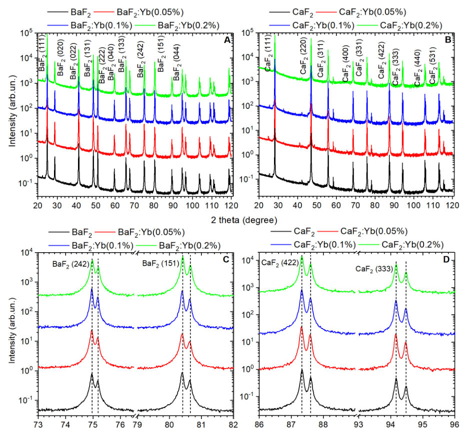
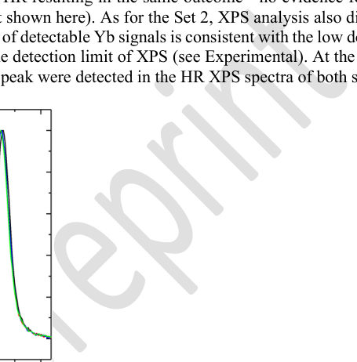
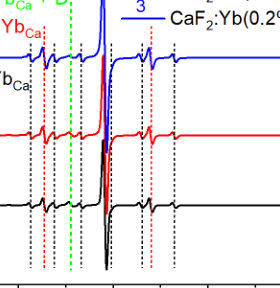
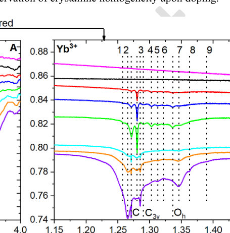

Authors: Pablo Martínez Crespo, Stefano Ribes, Martin Rahm, Richard Beckmann, Robert S. Jordan, Marisa Gliege, Santiago Miret, Vijay Kris Narasimhan, Rocío Mercado
Type: theory · Category: disordered systems and neural networks · PDF: https://arxiv.org/pdf/2605.10458v1
Analysis basis: abstract only; PDF text extraction failed or PDF unavailable
Summary. The paper introduces QT-Net, a new neural network architecture designed to predict atomic properties like charges and multipoles more effectively. It also proposes a new, more rigorous way to test how well these models perform on unseen chemical environments. This helps improve the accuracy of machine learning models used in molecular property prediction.
Why it may be interesting. not directly relevant
Main problem. The evaluation of machine learning models for predicting atomic properties (like partial charges) is difficult due to the lack of a principled out-of-distribution evaluation protocol at the atomic level.
Main result. The authors introduce QT-Net, a rotationally augmented, non-equivariant graph neural network, and a new evaluation protocol using SOAP-based clustering that demonstrates improved generalization for predicting atomic multipoles and downstream molecular properties.
Method. The study uses a held-out evaluation protocol based on clustering atomic environments with SOAP descriptors and employs 5x5 cross-validation with Tukey's HSD for statistical comparison between E(3)-equivariant and non-equivariant models.
Model / system. The models are applied to the QM9 dataset, focusing on predicting electron populations and multipoles for H, C, N, and O atoms within molecular structures.
Key observables. Partial charges, multipoles, electron populations, and molecular dipole moments.
Assumptions / limitations. The evaluation assumes that clustering atomic environments by SOAP descriptors provides a valid proxy for out-of-distribution testing.
Paper structure. The paper proposes a new evaluation protocol, performs a statistical comparison of equivariant vs. non-equivariant models, introduces the QT-Net architecture, and validates its performance on the QM9 dataset for property prediction.
Atomic properties such as partial charges or multipoles encode chemically meaningful information that can inform downstream molecular property prediction, but their evaluation as machine learning targets has been complicated by the absence of a principled out-of-distribution evaluation protocol at the atomic level. In this work, we propose a held-out evaluation protocol that clusters atomic environments by SOAP descriptors and computes metrics accounting only for cluster labels unseen during training. Following this procedure, we use 5$\times$5 cross-validation and Tukey's HSD to run a statistically rigorous comparison of E(3)-equivariant against non-equivariant, rotationally augmented models for predicting electron populations and multipoles of H, C, N, and O atoms. Building on our results, we introduce the Quantum Topological Neural Network (QT-Net), a rotationally augmented, non-equivariant graph neural network. We show that QT-Net can be used to infer properties of atoms in molecules from QM9 outside our training set, and that these inferred properties can yield improvement when used as input features for downstream molecular property prediction. To further validate the framework, molecular dipole moments computed from QT-Net's per-atom outputs recover the ground-truth values reported in QM9. We release all code and data, including a JAX implementation of QT-Net, to support the broader use of learned QTA properties as inductive biases for atomic-scale molecular machine learning.
Authors: Zhian Xu, Jian Yuan, Ze Yan, Xia Wang, Na Yu, Shihao Zhang, Yanfeng Guo
Type: both · Category: strongly correlated electrons · PDF: https://arxiv.org/pdf/2605.10509v1
Analysis basis: abstract only; PDF text extraction failed or PDF unavailable
Summary. This paper explores the RGaGe family of semimetals, revealing a large anomalous Hall effect driven by a Weyl semimetallic state. It demonstrates how tuning the rare-earth element allows for a controlled evolution from d-orbital to f-orbital dominated topology. This provides a new tunable platform for studying the interplay between magnetism and topology.
Why it may be interesting. not directly relevant
Main problem. The study investigates the interplay between magnetism, electronic correlations, and topological band structures in the noncentrosymmetric rare-earth germanide family RGaGe (R = Ce, Pr, Nd).
Main result. The researchers discovered a significantly enhanced intrinsic anomalous Hall conductivity (AHC) in RGaGe compared to RAlGe, driven by a Weyl semimetallic state that evolves from d-orbital to f-orbital dominance as the rare-earth element changes.
Method. The study uses a combination of crystal growth, experimental characterization, and first-principles calculations.
Model / system. The system consists of noncentrosymmetric rare-earth germanide semimetals RGaGe, where R = Ce, Pr, and Nd.
Key observables. Anomalous Hall conductivity (AHC), magnetic anisotropy, and orbital contributions to the Fermi level states.
Important parameters / regimes. Temperature (specifically 2 K), magnetic ordering temperature, and the specific rare-earth element (Ce, Pr, Nd).
Paper structure. The paper presents crystal growth and characterization, followed by magnetic anisotropy analysis, anomalous Hall effect measurements, and theoretical first-principles calculations of orbital contributions and Weyl physics.
The family of noncentrosymmetric rare-earth germanides RGaGe (R = Ce, Pr, Nd) provides a rich materials platform to explore the intertwined physics of strong magnetism, electronic correlations, and topological band structures. Through a combination of crystal growth, characterization, and first-principles calculations, we reveal that these compounds exhibit a pronounced uniaxial magnetic anisotropy, leading to distinct ground states: RGaGe orders ferromagnetically with moments along the crystallographic c-axis, and shows an antiferromagnetic-like structure in the ab-plane. A key finding is a significantly enhanced intrinsic anomalous Hall conductivity (AHC) compared to their well-known RAlGe counterparts, which even reaches as high as 948 Ω-1 cm-1 at 2 K in PrGaGe. Our theoretical analysis predicts that this AHC originates from a robust Weyl semimetallic state driven by inversion symmetry breaking, where Weyl points near the Fermi level couple strongly to the magnetic order. Importantly, this topological state persists above the magnetic ordering temperature, confirming its intrinsic electronic origin. Our calculation also reveals that, while the near-Fermi-level states in CeGaGe and PrGaGe are dominated by d-orbital contributions, NdGaGe exhibits significant f-orbital involvement, signaling a progressive evolution from d- to f-orbital dominated topology. These results establish the RGaGe system as a tunable platform for systematically extending the RAlGe-related family, showcasing a large anomalous Hall response and orbital evolution near the Fermi level, and advancing the understanding of the interplay between topology and magnetism in quantum materials.
Authors: Zhong-Chen Gao, Tianyi Zhang, Feifei Wang, Jingguo Hu, Peng Yand, Xiufeng Han
Type: theory · Category: other · PDF: https://arxiv.org/pdf/2605.09240v1
Analysis basis: abstract only; PDF text extraction failed or PDF unavailable
Summary. This paper proposes a new theoretical framework called 'spin elasticity' that applies the principles of classical elasticity to spin dynamics. It predicts new phenomena such as spin stress waves and a topological version of Hooke's law, potentially creating a new field called 'spinelastronics'.
Why it may be interesting. not directly relevant
Main problem. The paper seeks to extend the concept of classical elasticity to the spin degree of freedom to understand how spin torque relates to spin morphology.
Main result. The authors introduce 'spin elasticity' and a 'tau-D theory' that predicts a topological Hooke's law and a new class of collective excitations called spin stress waves.
Method. The authors develop a theoretical framework (tau-D theory) that bridges classical elasticity with topological spin physics.
Model / system. The system involves the spin degree of freedom and its interaction with torque, treated through a framework analogous to classical elastic matter.
Key observables. spin torque, spin morphology, spontaneous oscillations, resonance, and spin stress waves.
Paper structure. The paper introduces the concept of spin elasticity, establishes the tau-D theory linking classical elasticity to spin physics, and predicts new phenomena like spin stress waves.
Elasticity shapes our world. For centuries, it has been regarded as a property exclusive to ordinary matter. Here we uncover its hidden existence in the spin degree of freedom. We introduce spin elasticity-a framework linking spin torque to spin morpgology. This reveals a topological Hooke's law, uncovers spontaneous oscillations and resonance, and predicts a new class of collective excitations:spin stress waves. By establishing a unfied tau-D theory bridging classical elasticity and topological spin physics, this work completes the elastic picture and opens a new frontier for spintronics-spinelastronics.
Authors: Zhongjuan Han, Wu Xiong, Zhonghao Xia, WeiTong Huang, Jiangang He
Type: theory · Category: other · PDF: https://arxiv.org/pdf/2605.09529v1
Analysis basis: abstract only; PDF text extraction failed or PDF unavailable
Summary. This paper demonstrates that the stacking polymorphism in Sc2Si2Te6 significantly alters its thermoelectric properties by changing band degeneracy and phonon scattering. It concludes that the ABC stacking is optimal for high ZT and suggests that controlling stacking faults is key to enhancing performance.
Why it may be interesting. not directly relevant
Main problem. The study investigates how different stacking sequences (AA, AB, and ABC) in the van der Waals material Sc2Si2Te6 affect its electronic structure, lattice dynamics, and thermoelectric performance.
Main result. The ABC stacking achieves the highest thermoelectric figure of merit (ZT) due to high conduction-band degeneracy, while the AB stacking shows the lowest lattice thermal conductivity. The AA stacking is identified as detrimental to thermoelectric performance.
Method. First-principles calculations combined with electron and phonon transport theories, including analysis of three-phonon and four-phonon scattering.
Model / system. The physical system is the layered van der Waals material Sc2Si2Te6, specifically examining three high-symmetry stacking polymorphs: AA, AB, and ABC.
Key observables. Conduction-band degeneracy, lattice thermal conductivity, and the thermoelectric figure of merit (ZT).
Important parameters / regimes. Stacking sequences (AA, AB, ABC), sliding barrier energy (~10 meV/atom), and phonon scattering processes (three-phonon and four-phonon).
Assumptions / limitations. The study assumes the validity of first-principles density functional theory and transport theories for calculating electronic and thermal properties.
Paper structure. The paper investigates thermodynamic stability, electronic structure, lattice dynamics, and thermoelectric performance across different stacking sequences.
Stacking polymorphism is a common characteristic of van der Waals layered materials and can substantially modify their physical properties. Here, based on first-principles calculations combined with electron and phonon transport theories, we systematically investigate the thermodynamic stability, electronic structure, lattice dynamics, and thermoelectric performance of Sc_2Si_2Te_6 with three high-symmetry stacking sequences, namely, AA, AB, and ABC. We find that the AA- and AB-stacked structures are nearly degenerate in energy with the experimentally reported ABC phase, and that the maximum sliding barrier among these stacking sequences is only about 10~meV/atom, thereby accounting for the stacking faults observed experimentally. These three stacking sequences exhibit distinct electronic structures, with the conduction-band minimum being highly sensitive to the stacking sequence. As a consequence, the conduction-band degeneracies are 12, 2, and 8 for the ABC, AA, and AB stackings, respectively, leading to markedly different electronic transport properties near the band edge. The lattice thermal conductivity is governed primarily by three-phonon scattering, whereas four-phonon scattering provides an additional reduction, particularly in the ABC stacking. Among the three structures, the AB stacking exhibits the lowest lattice thermal conductivity owing to its stronger three-phonon scattering and lower phonon group velocity. As a result, the maximum thermoelectric figure of merit, ZT, is achieved in the ABC structure, followed closely by the AB structure, whereas the AA structure shows a substantially reduced value. These results demonstrate that the stacking sequence exerts a non-negligible influence on the thermoelectric performance of Sc_2Si_2Te_6 and suggest that suppressing the formation of the AA stacking is important for achieving high thermoelectric performance.
Authors: Nima Karimitari, Jacob Clary, Derek Vigil-Fowler, Ravishankar Sundararaman, Gábor Csányi, Christopher Sutton
Type: theory · Category: disordered systems and neural networks · PDF: https://arxiv.org/pdf/2605.09394v1
Analysis basis: abstract only; PDF text extraction failed or PDF unavailable
Summary. This paper investigates how different training strategies for machine-learned interatomic potentials affect their ability to model catalytic reactions. It finds that fine-tuning large foundation models provides superior accuracy and transferability to new chemical environments compared to training models from scratch. This work provides a roadmap for creating efficient and accurate potentials for complex catalytic processes.
Why it may be interesting. not directly relevant
Main problem. The performance of machine-learned interatomic potentials (MLIPs) for studying catalytic reaction pathways is highly dependent on the training set and sampling strategy.
Main result. Fine-tuning (FT) large foundation models is less sensitive to sampling and transfers better to out-of-distribution reactions than from-scratch (FS) training, with a large fine-tuned model achieving high accuracy even on unseen surfaces.
Method. The study compares nine MLIP training strategies, including from-scratch training with perturbed high-energy configurations and fine-tuning of large foundation models like MACE, evaluated on 141 different catalytic reactions.
Model / system. The study focuses on machine-learned interatomic potentials applied to metallic and metal-oxide catalysts, specifically covering CO2 reduction, propane dehydrogenation, hydrogen intercalation on Pd, and oxygen evolution reactions (OER).
Key observables. Reaction energies (Er) and reaction energy barriers (Ea).
Important parameters / regimes. Training set composition (FS vs FT), percentage of perturbed high-energy configurations (5%-10%), and Mean Absolute Error (MAE) in eV.
Assumptions / limitations. The study assumes that the accuracy of MLIPs can be significantly improved by specific sampling of high-energy configurations or by leveraging pre-trained foundation models.
Paper structure. The paper compares different MLIP training strategies (FS vs FT), evaluates them across a diverse set of 141 reactions, demonstrates the superior transferability of fine-tuned models to out-of-distribution tasks, and concludes with a large-scale screening of bimetallic alloys.
Once trained, machine-learned interatomic potentials (MLIPs) provide a fast and accurate way to study catalytic reaction pathways, but their performance strongly depends on the training set. Here, we compare nine MLIPs trained with different data sets and strategies, including from-scratch (FS) training and fine-tuning (FT) of large foundation models. The models are evaluated on reaction energies, $E_{r}$, and reaction energy barriers, $E_{a}$, for 141 reactions, including CO$_2$ reduction to C$_2$ and C$_3$ products, propane dehydrogenation, hydrogen intercalation on Pd, and out-of-distribution oxygen evolution reaction (OER) on metal oxides. FS models trained with 5%--10% perturbed high-energy configurations from molecular dynamics or contour exploration reduce the error by more than twofold compared with models trained only on relaxation trajectories. In contrast, FT MLIPs are less sensitive to sampling and transfer well to out-of-distribution reactions. An MLIP fine-tuned on metallic catalysts achieves a 0.30 eV MAE for OER on iridium oxide polymorphs, outperforming out-of-the-box MACE-MH-1 by 0.08 eV and the best FS model by 0.14 eV. A model fine-tuned to O and OH adsorption on metal oxides gives a 0.19 eV reaction-barrier MAE for out-of-distribution CO$_2$RR on Cu, comparable to an FS model trained on in-distribution C--C bond-breaking reactions. Finally, a large MLIP fine-tuned on 49,860 configurations gives the best overall performance across metallic and metal-oxide catalysts and was used to screen a large left-out set of bimetallic alloys, achieving a 0.15 eV MAE for $E_{r}$, even for adsorbates on unseen Miller-index surfaces such as (532). This work identifies the training configurations needed for accurate FS and FT MLIPs for catalytic reaction modeling.
Authors: M. Koratzinos, F. Bardi, V. Batsari, I. Dimoulios, O. Kuhlmann, A. Thabuis, M. Duda
Type: experiment · Category: other · PDF: https://arxiv.org/pdf/2605.10826v1
Analysis basis: abstract only; PDF text extraction failed or PDF unavailable
Summary. This paper describes the construction and testing of the first-ever Canted-Cosine-Theta (CCT) sextupole magnet using high-temperature superconducting ReBCO tape. The project aims to provide specialized magnets for the short straight sections of the FCC-ee accelerator. The study demonstrates the feasibility of using HTS technology for advanced accelerator components.
Why it may be interesting. not directly relevant
Main problem. The development and testing of a high-temperature superconducting (HTS) Canted-Cosine-Theta (CCT) sextupole magnet for use in the FCC-ee accelerator.
Main result. The successful design, manufacture, and cryogenic testing of the first-ever HTS CCT magnet demonstrator using ReBCO tape.
Method. The researchers designed and manufactured a single-aperture, two-layer CCT magnet and performed testing under cryogenic conditions using HTS tapes from two different manufacturers.
Model / system. A single-aperture, two-layer Canted-Cosine-Theta (CCT) sextupole magnet utilizing high-temperature superconducting ReBCO tape.
Key observables. Cryogenic temperature measurements and magnet performance under cryogenic conditions.
Paper structure. The paper presents the design, manufacturing process, and experimental testing of the HTS CCT magnet, including the qualification of HTS tapes and cryogenic temperature measurements.
A single-aperture, two-layer Canted-Cosine-Theta (CCT) sextupole magnet using high-temperature superconducting (HTS) ReBCO tape has been developed for the short straight sections (SSS) of FCC through the FCCee-HTS4 project. The magnet was designed, manufactured and tested under cryogenic conditions. Two HTS tapes from two manufacturers have been qualified for this specific application. Design and manufacturing details and cryogenic temperature measurements are presented. This demonstrator represents the first HTS CCT magnet ever constructed.
Authors: Xiaoping Ma, Dianzhong Li, Zhuo Zhao, Saichao Cao, Donghao Pei, Pei Wang, Yuxi Tao, Paixian Fu, Hongwei Liu, Xiuhong Kang
Type: experiment · Category: statistical mechanics · PDF: https://arxiv.org/pdf/2605.08620v1
Analysis basis: abstract only; PDF text extraction failed or PDF unavailable
Summary. The researchers identified a previously unknown 'superite' phase that acts as an intermediate step between liquid and solid during the solidification of steel. This discovery provides a new understanding of how complex microstructures and chemical segregations form in alloys. These findings are significant for improving the control of metal solidification processes.
Why it may be interesting. not directly relevant
Main problem. The paper investigates the fundamental mechanism of alloy solidification, specifically challenging the classical direct liquid-to-solid transition model.
Main result. The discovery of a new 'superite' phase, revealing a three-stage liquid-superite-solid phase transformation process that governs the formation of multiscale microstructures and segregation.
Method. In-situ and real-time morphology observation combined with X-ray diffraction (XRD) testing during the solidification of three different steels.
Model / system. The physical system consists of three different types of steel alloys undergoing solidification from a liquid phase.
Key observables. Morphology of dendritic structures, phase composition, and solute element segregation.
Important parameters / regimes. Phase proportion, phase constitution, and the transition from superite to solid.
Assumptions / limitations. The study assumes the observed transition mode is a general mechanism applicable to the studied steels.
Paper structure. The paper presents the identification of the superite phase, describes the observed liquid-superite-solid transition process, and discusses the implications for understanding multiscale microstructures and segregation in metals.
Based on classical concept, solidification of alloys is a direct transition from liquid phase to solid phase, by which dendrites and dendritic segregation are produced. Through in-situ and real time morphology observation and XRD test during solidification of three steels, a new superite phase featured as statistically oriented tiny structures was identified, and a general liquid-superite-solid phase transformation process is revealed. In the early solidification stage, the liquid alloys transit to dendrites composed of superite phase. Initiated from the boundaries of dendritic arms or dendrite grains, the superite phase transits to austenite grains within an initial dendritic arm, and expels solute elements to the residual superite phase. Mixed multi-phase microstructures are subsequently produced from the residual enriched superite phase. Here, although three steels exhibit different phase proportion and phase constitution in the superite-solid transition, they all follow above general transition mode. Multiscale microstructures and segregations are produced in the transition from superite to solid. These new findings change the basic understanding about the solidification of alloys, rediscover the formation mechanism on segregations and multiscale solidification microstructures, including dendrite pattern, solid dendritic arm, dendritic segregation, the mixed multi-phase microstructures, eutectic, inclusions and precipitate. These new findings are also crucial to the control of solidification microstructures and segregation in metals.
Authors: Raul Corrêa, Luiz G. Cançado, Ado Jorio
Type: theory · Category: other · PDF: https://arxiv.org/pdf/2605.08387v1
Analysis basis: abstract only; PDF text extraction failed or PDF unavailable
Summary. This paper extends the theoretical framework for Tip-Enhanced Raman Spectroscopy (TERS) to include the out-of-plane Raman response of 2D materials. It provides an analytical method to calculate field propagation and demonstrates how parameters like tip radius and coherence length affect the signal. The model is validated by showing consistency with existing graphene TERS experiments.
Why it may be interesting. not directly relevant
Main problem. The existing TERS theory was limited to graphene-like systems where out-of-plane Raman response is neglected, failing to account for the full Raman response in other 2D materials like TMDs.
Main result. The authors developed an expanded TERS theory including out-of-plane response, providing an exact analytical expression for field propagation and identifying the importance of the sample-tip (TS) scattering contribution.
Method. Analytical derivation of field propagation between tip and sample and a parametric study of TERS signal variations.
Model / system. The system consists of a metallic tip interacting with a 2D material (such as graphene or TMDs) under Tip-Enhanced Raman Spectroscopy conditions.
Key observables. TERS enhancement factor, normalized tip-approach measurements, and Raman signal intensity.
Important parameters / regimes. Tip radius, out-of-plane Raman response, TERS coherence length, and medium refractive index.
Assumptions / limitations. The theory assumes the importance of the out-of-plane response is tied to the significance of the TS scattering contribution.
Paper structure. The paper introduces the expanded theory, provides an analytical expression for field propagation, performs a parametric study of physical variables, and concludes by applying the model to existing graphene TERS experimental data.
Tip-Enhanced Raman Spectroscopy (TERS) can be used to make nanoscale spatial measurements of 2D materials, such as graphene and transition metal dichalcogenides (TMDs). The TERS theory introduced in [Phys. Rev. X 4, 031054 (2014)], however, was tailored for graphene, whose out-of-plane Raman response is neglected. In the present work, we include the out-of-plane response in the TERS theory. In doing so, we provide an exact analytical expression for the field propagation between the tip and the sample, and show that the contribution to the TERS signal that scatters first at the sample, then at the tip (sample-tip, or TS) is important only when the out-of-plane response is significant. We extensively study the variation of TERS experimental measurements when varying physical parameters of the system, like the tip radius, the out-of-plane response, the TERS coherence length, and others. It becomes evident that the TERS enhancement is very sensitive to the out-of-plane Raman response of the phonon mode, while normalized tip-approach measurements are more sensitive to the coherence length, and we show that the medium refractive index leads to an effective tip enhancement factor $f_e$. Our results lead to the conclusion that, in general, a strong TERS enhancement is a necessary condition for investigating the physics discussed here, which here means surveying the difference in TERS signals between different Raman modes. We use our model to analyze some graphene TERS experiments, showing that they are consistent with a negligible out-of-plane Raman response and a non-zero TERS coherence length in the fitting.
Authors: Tim Kokkeler, Vitaly N. Golovach, F. Sebastian Bergeret
Type: theory · Category: other · PDF: https://arxiv.org/pdf/2605.10747v1
Analysis basis: abstract only; PDF text extraction failed or PDF unavailable
Summary. This paper proposes a theoretical method to unambiguously identify altermagnets through a specific type of magnetoresistance called SSMR. It provides clear experimental criteria that distinguish altermagnets from other compensated magnets. This is significant for the emerging field of altermagnetism-based spintronics.
Why it may be interesting. not directly relevant
Main problem. The paper aims to establish a theoretical framework to distinguish altermagnetism from conventional compensated magnets with spin-orbit coupling using transport measurements.
Main result. The authors identify 'spin-splitter magnetoresistance' (SSMR) as a smoking-gun signature of collinear altermagnetism, characterized by specific angular dependencies and a direct proportionality between longitudinal and transverse signals.
Method. The authors develop a theory of angle-dependent magnetoresistance (ADMR) for metallic altermagnets coupled to ferromagnetic insulators.
Model / system. The system consists of metallic altermagnets in contact with ferromagnetic insulators, focusing on the interaction between the ferromagnetic magnetization and the altermagnetic Néel vector.
Key observables. Angle-dependent magnetoresistance (ADMR), specifically longitudinal and transverse SSMR signals.
Important parameters / regimes. Relative orientation between the ferromagnetic magnetization and the altermagnetic Néel vector.
Assumptions / limitations. The theory focuses on metallic altermagnets coupled to ferromagnetic insulators.
Paper structure. The paper develops a theory for ADMR, compares SSMR to spin-Hall magnetoresistance (SMR), and establishes specific criteria for identifying altermagnetism.
We develop a theory of angle-dependent magnetoresistance (ADMR) in metallic altermagnets coupled to ferromagnetic insulators and establish criteria that distinguish them from conventional compensated magnets with spin-orbit coupling. We show that the spin-splitter magnetoresistance (SSMR) reported by H. Chen et al. [Adv. Mater. 37, 2507764 (2025)] constitutes a smoking-gun signature of collinear altermagnetism in metallic systems. In contrast to spin-Hall magnetoresistance (SMR), SSMR exhibits three key distinctions: it depends solely on the relative orientation between the ferromagnetic magnetization and the altermagnetic Néel vector, yields a longitudinal ADMR response of opposite sign, and features a direct proportionality between longitudinal and transverse ADMR signals, absent in SMR. These results provide a clear route to unambiguously identify altermagnets in transport.
Authors: Eleonora Rusconi, Lorenzo Gallo, Victor A. L'vov, Anna Kosogor, Simone Fabbrici, Giovanna Trevisi, Francesco Cugini, Massimo Solzi, Thomas Schrefl, Franca Albertini
Type: both · Category: statistical mechanics · PDF: https://arxiv.org/pdf/2605.08920v1
Analysis basis: abstract only; PDF text extraction failed or PDF unavailable
Summary. The paper presents a new thermodynamic method to precisely identify Curie and martensitic transformation temperatures in Heusler alloys. By accounting for how structural changes affect magnetic exchange, the authors can extract hidden characteristic temperatures from standard magnetization measurements. This approach is broadly applicable to other multiferroic and ferromagnetic materials.
Why it may be interesting. not directly relevant
Main problem. Determining characteristic temperatures of magneto-structural transitions in Heusler alloys is challenging due to the complex interplay between structural and magnetic properties.
Main result. A novel thermodynamic analysis reveals that structural transitions significantly impact the spin-exchange parameter, leading to a difference of at least 50 K between Curie temperatures of the austenitic and martensitic states.
Method. A novel thermodynamic analysis of temperature-dependent magnetization M(T) and magnetic susceptibility χ(T) data, considering the impact of structural transitions on the spin-exchange parameter.
Model / system. Ni50Mn25-xCuxGa25 (x = 6.25, 6.5, 6.75, 7) and Ni50.5Mn18.5Cu6.5Ga24.5 ferromagnetic Heusler alloys.
Key observables. Magnetization M(T), magnetic susceptibility χ(T), and the derivatives dM(T)/dT.
Important parameters / regimes. Curie temperatures (Tc), martensitic transformation temperatures (MT), and the spin-exchange parameter.
Assumptions / limitations. The analysis assumes the structural transition's impact can be modeled through its effect on the spin-exchange parameter.
Paper structure. The paper identifies three types of transformational behavior in specific Heusler alloys, presents experimental magnetization and susceptibility data, applies a novel thermodynamic framework to analyze the interplay between structural and magnetic phases, and concludes with the applicability of this method to multiferroic materials.
Ferromagnetic solids acquire nontrivial magnetic and caloric properties when the temperature of the structural phase transition approaches the Curie point. Deciphering magneto-structural transitions, i.e. determining their characteristic temperatures and elucidating the related properties, remains challenging. In the present paper, three types of transformational behaviour of Ni50Mn25-xCuxGa25 (x = 6.25, 6.5, 6.75, 7) and Ni50.5Mn18.5Cu6.5Ga24.5 alloys have been identified, arising from small variations in chemical composition: (i) structural martensitic transformation (MT) in the ferromagnetic phase; (ii) magneto-structural phase transition from paramagnetic austenite to ferromagnetic martensite; (iii) MT in paramagnetic phase. The temperature-dependent values of magnetization, M(T), and of magnetic susceptibility, $χ(T)$, were measured for each alloy. A novel thermodynamic analysis was used to determine the Curie points and MT temperatures. The novelty lies in considering the interplay between structural and magnetic characteristics of the alloys through the impact of the structural transition on the spin-exchange parameter. The theoretical analysis of experimental data revealed that this impact results in a large difference ($\geq$ 50 K) between the Curie temperatures computed for the austenitic and martensitic states of each alloy. The characteristic temperatures, corresponding to the extrema of the dM(T)/dT and $χ(T)$ functions, were calculated. The correlation of these temperatures with the Curie temperatures and the MT temperatures is not straightforward and depends strongly on the type of transformational behaviour (i) - (iii). The proposed approach provides a robust framework for extracting unmeasurable characteristic temperatures from standard magnetization data, applicable to ferromagnetic Heusler systems and other multiferroic ferromagnetic materials.
Authors: Sho Hayakawa, Sergei L. Dudarev, Max Boleininger
Type: theory · Category: disordered systems and neural networks · PDF: https://arxiv.org/pdf/2605.10630v1
Analysis basis: abstract only; PDF text extraction failed or PDF unavailable
Summary. The researchers used a machine-learning model to study how the complex shapes of dislocation loops influence their stability and movement. They discovered that a single parameter representing geometric irregularity can predict both the thermodynamic behavior and the diffusion of these loops. This provides a more nuanced understanding of defect dynamics in materials.
Why it may be interesting. not directly relevant
Main problem. Investigating how microscopic geometric variations in self-interstitial prismatic dislocation loops affect their thermodynamic properties and climb dynamics.
Main result. The study identifies a single universal parameter describing morphological irregularity that determines both the thermodynamic properties and the mobility of the dislocation loops.
Method. Development of a machine-learning model trained on atomistic simulation data to predict formation energies, followed by statistical mechanical derivations and dynamic simulations.
Model / system. A self-interstitial atom dislocation loop with arbitrary, geometrically complex configurations.
Key observables. Formation energy, configurational free energy, thermodynamic entropy, diffusion coefficients, and effective activation energies.
Important parameters / regimes. Morphological irregularity parameter, temperature, and formation energy.
Assumptions / limitations. The ML model assumes that atomistic simulation data is sufficient to generalize across a broad range of complex configurations.
Paper structure. The paper first introduces an ML model for energy prediction, then uses statistical mechanics to derive thermodynamic quantities, and finally performs dynamic simulations to evaluate mobility.
We explore how the thermodynamic properties and dynamics of a self-interstitial prismatic dislocation loop are affected by microscopic-scale variations in its geometric configuration, an aspect that rarely received attention in literature. First, we develop a machine-learning (ML) model to predict the formation energy of an arbitrary geometrically complex configuration of a self-interstitial atom dislocation loop. Trained on atomistic simulation data, the ML model achieves high predictive accuracy across a broad range of configurations, with a typical error in the 1% range. Second, from the ML model, we evaluate the density of configurational microstates as a function of loop's formation energy and derive analytical expressions valid in tractable limiting cases. Using statistical mechanics, we derive the configurational free energy, the average energy, and the thermodynamic entropy of a dislocation loop as a function of temperature. Third, we simulate the dynamics of self-climb of dislocation loops with various geometries and evaluate their diffusion coefficients and effective activation energies. Our analysis shows that there is a single universal parameter describing the morphological irregularity of loop configurations in its ground state. This parameter determines the thermodynamic properties of a loop as well as its dynamics, and simulations illustrate how the properties and mobility of a configurationally complex loop vary as functions of the irregularity parameter.
Authors: Sha Han, Kebei Chen, Runnan Zhang, Juemin Yi, Wentao Song, Ke Xu
Type: both · Category: other · PDF: https://arxiv.org/pdf/2605.09263v1
Analysis basis: abstract only; PDF text extraction failed or PDF unavailable
Summary. The paper identifies a universal 3:1 scaling ratio in the peak spacings of the quantum-confined Stark effect spectrum. By using 3D visualization, the authors show that increasing the electric field expands the energy range without changing the fundamental spacing patterns. This discovery provides a new tool for designing and diagnosing electro-optic devices.
Why it may be interesting. not directly relevant
Main problem. Understanding the scaling behavior of the quantum-confined Stark effect (QCSE) spectrum under varying electric field strengths.
Main result. Discovery of a universal 3:1 scaling ratio between sub-bandgap and above-bandgap spectral peak spacings, which remains constant regardless of the electric field strength.
Method. The researchers used a novel three-dimensional (3D) visualization technique to analyze spectral patterns and derived analytical scaling laws for peak spacings.
Model / system. The study uses InGaN as a model system and validates the findings using GaAs systems under electroluminescence working conditions.
Key observables. Spectral peak spacings, redshift of the spectrum, and the Tauc background.
Important parameters / regimes. Electric field strength (F), sub-bandgap and above-bandgap regions, and the 3:1 coefficient ratio.
Assumptions / limitations. The scaling laws are assumed to be electric-field-independent and applicable to the studied semiconductor systems.
Figures summary. The notes mention a novel three-dimensional (3D) visualization used to reveal the scaling of peak spacings.
Paper structure. The paper introduces the QCSE redshift, presents the discovery of the 3:1 scaling laws, provides a 3D visualization to explain the origin of the ratio, and validates the findings across different materials and conditions.
We report that the quantum-confined Stark effect spectrum exhibits a nearly rigid redshift while preserving its characteristic peak spacing patterns when increasing the electric field strength F. Using InGaN as a model system, we uncover two electric-field-independent scaling laws for the spectral peaks in both the sub-bandgap and above-bandgap regions and the coefficient ratio is near 3:1. With a novel three-dimensional (3D) visualization, we reveal that the sub-bandgap peak spacings scale as $\frac{12π\hbar^2}{L^2\sqrt{m_em_h}}$ while the above-bandgap peak spacings scale as $\frac{4π\hbar^2}{L^2\sqrt{m_em_h}}$, explaining the origin of the 3:1 ratio. This scaling behavior, validated in both InGaN and GaAs systems and at electroluminescence working conditions, shows that increasing F only expands the energy range and increases the number of peaks without altering the spacing. Beyond these laws, the 3D profile offers new insights into the Tauc background, Franz-Keldysh oscillations and coherence length, providing a powerful tool for the design and diagnostics of electro-optic devices.
Authors: Zeyu Yin, Li Liang, Zhichao Zhou, Xiao Li
Type: theory · Category: other · PDF: https://arxiv.org/pdf/2605.10011v1
Analysis basis: abstract only; PDF text extraction failed or PDF unavailable
Summary. This paper explores how the broken symmetry in Janus metal phosphochalcogenide monolayers leads to a unique coexistence of different spin textures (Ising, Weyl, and Rashba) across different momentum valleys. It also demonstrates that these properties, including Hall currents and optical responses, can be tuned using strain, offering potential for new spintronic and valleytronic devices.
Why it may be interesting. not directly relevant
Main problem. The study aims to investigate the coexistence of diverse spin textures and their coupling to the valley degree of freedom in noncentrosymmetric Janus metal phosphochalcogenides.
Main result. The researchers found that Janus MP2S3Se3 monolayers exhibit Ising-type spin textures at K valleys and a coexistence of Weyl-type and Rashba-type spin textures at the Gamma valley, alongside valley-dependent anomalous Hall currents and optical selectivity.
Method. First-principles calculations (density functional theory).
Model / system. Janus MP2S3Se3 monolayers, which are noncentrosymmetric 2D materials.
Key observables. Momentum-resolved spin textures, Berry curvature, anomalous Hall currents, optical selectivity, and band gaps.
Important parameters / regimes. Applied strain, which is used to tune energy differences and band gaps.
Paper structure. The paper investigates electronic properties via first-principles calculations, analyzes spin textures at different valleys, examines valley-dependent transport and optical properties, and discusses the effects of strain.
Momentum-resolved spin textures and potential valley-contrasting physical properties in the momentum space are two intriguing characteristics of noncentrosymmetric materials, and they have broad applications in spintronics and valleytronics. The realization of diverse spin textures within a single material, along with their further coupling to the valley degree of freedom, is highly desirable. Via first-principles calculations, we investigate electronic properties of Janus MP$_2$S$_3$Se$_3$ monolayers, which exhibits distinct spin textures at different valleys. While Ising-type spin textures are located at $K_\pm$ valleys, the symmetry breaking from the Janus structure brings about a coexistence of Weyl-type and Rashba-type spin textures at $Γ$ valley. In addition to valley-contrasting spin textures, valley dependence also occurs in Berry-curvature-driven anomalous Hall currents and optical selectivity. Besides, energy differences between $Γ$ and $K_\pm$, as well as band gaps, are highly tunable by applied strain. These findings present an intriguing coupling between diverse spin textures and multiple valleys, and pave the way for designing advanced electronic devices that leverage spin and valley degrees of freedom.
Authors: David John, Shelja Sharma, Marius Stef, Gabriel Buse, Zdeněk Remeš, Anna Artemenko, Sergii Chertopalov, Vineet Sikarwar, Alan Mašláni, Jafar Fathi, Jakub Pilař, Tomáš Hostinský, Jan Zich, Tomáš Mates, Brenda Natalia Lopez Nino, Michal Hlína, Karol Bartosiewicz, Marina Konuhova, Anatoli Popov, Ján Lančok, Maksym Buryi
Type: experiment · Category: other · PDF: https://arxiv.org/pdf/2605.10160v1
Analysis basis: full PDF text, analyzed in chunks




Summary. This study compares Ytterbium incorporation in BaF2 and CaF2 host crystals to understand how host chemistry controls dopant charge states. It demonstrates that CaF2 provides a more stable environment for Yb2+ due to better ionic size matching, which is critical for optimizing fluoride-based materials for quantum and photonic applications.
Why it may be interesting. not directly relevant
Main problem. Investigating how the host cation identity (Ba2+ vs Ca2+) affects the stabilization of Yb2+ vs Yb3+ charge states and the resulting local lattice perturbations and defect formation in fluoride crystals.
Main result. CaF2 is more favorable for Yb2+ stabilization due to a better ionic size match, whereas BaF2 favors perturbed Yb3+ environments with increasing dopant levels. The study reveals a decoupling between long-range structural stability and local lattice perturbations.
Method. A combination of X-ray diffraction (XRD), X-ray photoelectron spectroscopy (XPS), electron paramagnetic resonance (EPR), infrared photoluminescence (IR PL), and photothermal deflection spectroscopy (PDS).
Model / system. Yb-doped BaF2 and CaF2 single crystals (cubic fluorite structure, space group Fm-3m) with low doping levels (0.05-0.2 mol%).
Key observables. Yb charge states (Yb2+ vs Yb3+), g-factors, hyperfine interaction parameters, crystal-field splitting, lattice parameters, and surface chemical composition.
Important parameters / regimes. Doping concentrations (0.05-0.2 mol%), ionic radii of Yb2+ and Yb3+, and temperature range (10-60 K for EPR).
Assumptions / limitations. The study assumes the crystals are substitutionally doped and focuses on the low-concentration regime where long-range cubic symmetry is maintained.
Figures summary. Figure 1 shows photographs of cleaved BaF2:YbF3 and CaF2:YbF3 crystals at various concentrations.
Paper structure. The paper introduces the importance of lanthanide-doped fluorides, describes the crystal growth and characterization methods, presents structural and chemical results (XRD, XPS), details the magnetic and optical properties (EPR, IR PL, PDS), and concludes with implications for quantum device optimization.
Lanthanide-doped fluorides are promising materials for advanced photonic and quantum applications due to their wide bandgap, low phonon energy, and chemical stability. In this work, we present a systematic comparative study of ytterbium incorporation at low doping levels (0.05--0.2 mol\%) in BaF$_2$ and CaF$_2$ single crystals, focusing on the interplay between host lattice properties, charge-state stabilization, and defect formation mechanisms. Using a combination of X-ray diffraction (XRD), X-ray photoelectron spectroscopy (XPS), electron paramagnetic resonance (EPR), transmittance, and infrared photoluminescence (IR PL), we explore how host lattice properties affect the stabilization of Yb$^{3+}$ and Yb$^{2+}$ ions. XRD confirmed cubic phase purity and lattice parameter stability in both hosts, while XPS revealed surface chemical composition variations associated with charge-compensating defects and trace impurities. EPR spectra indicated that BaF$_2$ favored perturbed Yb$^{3+}$ environments with increasing dopant levels, while CaF$_2$ maintained predominantly unperturbed sites, suggesting a more favorable ionic match for Yb$^{2+}$. Photothermal deflection spectroscopy (PDS) and IR PL results showed host-specific optical responses, with CaF$_2$ exhibiting crystal-field splitting and broader local field effects. These results reveal a clear decoupling between long-range structural stability and local lattice perturbations, and demonstrate that host cation identity governs the balance between Yb$^{2+}$ and Yb$^{3+}$ stabilization as well as defect-driven optical behavior. This offers valuable insights for optimizing rare-earth-doped fluoride crystals in laser, scintillator, and quantum device applications.